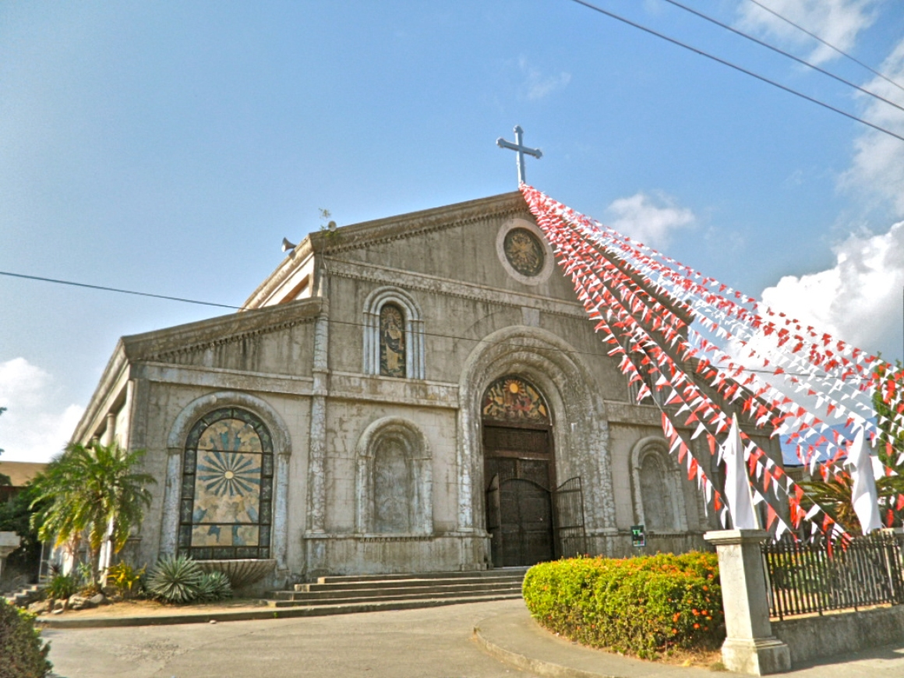

A Place with beautiful environment and beautiful people.

The Kambingan Festival.

Safe, clean and liveable are the words often used by residents and repeat visitors to describe Tuy.I encourage you to browse the site to have a better idea about our humble town, what we have and what we can offer. May your visit be an enjoyable and as what as you have expect it to be. Thank you.
The Philippine Archipelago became one of the colonies of Spain after its discovery in 1521. In 158l, Batangas being part of the archipelago was reached by its power. Balayan, a rich and developed community was named first (1st ) capital of the province.
Because of its large land area, several villages began to flourish until the northern part of Balayan. A fast growing community emerged and became the center of development. The place was named Tuy, given by Don Salvador Elio, in honor of his hometown “Tuy” in Galicia, Spain.
“Señor Salvador Elio - 1866 Gobernador de la Provincia (Batangas) es de Tuy, Espana, asunombre y memoria fuel llama to Tuy”
Tuy, officially the Municipality of Tuy (Tagalog: Bayan ng Tuy), is a 3rd class municipality in the province of Batangas, Philippines. According to the 2020 census, it has a population of 46,519 people.The patron of Tuy is Saint Vincent Ferrer, the patron of construction workers, whose feast day is celebrated on May 8.
Tuy is located between Balayan and Nasugbu. It is also situated between 2 rivers: in the north, Tuy town proper's boundary is the Mataywanac/Salipit River, while in the south, the Tuy town proper's boundary is the Obispo River.Tuy has been producing bakery products of its own, like the jacobina biscuits and biscocho toasted bread, among other bakery products, since the 1960s.
The Municipality of Tuy, Batangas is always looking for ways to reduce energy consumption and provide quality lighting to its roadways. Mayor Jose Jecerell Cerrado of Tuy, Batangas has approved a project for the installation of streetlights at the town proper approach.
Kambingan Festival is a town festivity celebrated annually on the founding anniversary of Tuy, Batangas. The Kambingan Festival is an annual festival held in Tuy, Batangas, Philippines.“Goat-raising” is one of the primary sources of revenue for Tuynians.
Villa Gavana Resort is a resort in Batangas. Villa Gavana Resort is situated nearby to Tuy, northeast of Kaytitinga River.

Address: Tuy Batangas, Philippines
Zip Code: 4214
Trunkline: (043)276-0047 / (043)276-0100 / (043)276-0104 / (043)276-0102
Office of the Mayor: 200-201
Sangguniang Bayan: (043) 276-0121